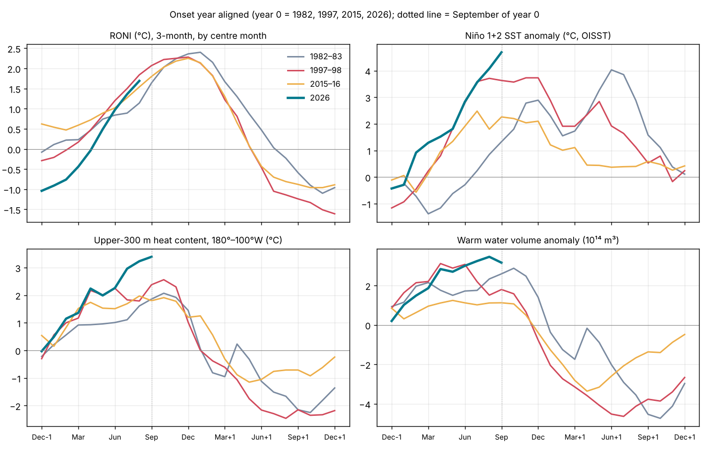

The 2026 El Niño against 1982–83, 1997–98 and 2015–16: a preliminary comparison
Abstract
This is a preliminary, observation-only comparison of the 2026 El Niño with the three strongest events of the satellite era, 1982–83, 1997–98 and 2015–16, at the same stage of each: the end of September of the onset year. On the official relative index (RONI) 2026 is the second-strongest July–September on record (+1.69 °C, behind 1997's +1.84 °C). It has grown faster than any of the three, by +2.45 °C from January–March to July–September, starting from La Niña rather than from neutral or warm conditions. It is the most east-based of the four: September Niño 1+2 was +4.69 °C against +3.63 °C in 1997. Upper-ocean heat content in the eastern half of the basin (+3.39 °C) and the warm water volume (peak +3.46 × 10¹⁴ m³ in August 2026) are the highest since the records began (1979–80), and the atmosphere is as strongly coupled as in 1997. Two things set 2026 apart: a strongly negative Pacific Decadal Oscillation, where 1997 and 2015 had a positive one, and the warmest tropical oceans on record, which is why the traditional ONI (+2.16 °C) runs 0.47 °C above RONI. In the three analogs RONI rose a further 0.44–1.26 °C after July–September and peaked in November–January; heat content peaked two to four months before RONI. These are analog statistics, not a forecast.
Main findings (preliminary)
- Strength. RONI JAS +1.69 °C, rank 2 of 77 since 1950 (1997 is first). On the traditional ONI, JAS 2026 (+2.16 °C) is first. September relative Niño 3.4 (+2.06 °C) is the highest September in the record (from 1981). Observed.
- Speed. RONI rose +2.45 °C from JFM to JAS, against +1.87 (1997), +1.07 (2015) and +0.92 (1982), because it started from La Niña (NDJ −1.04 °C). Observed.
- Flavour. East-based like 1997, more so: September Niño 1+2 +4.69 °C (the highest September in the record), Niño 4 +0.95 °C; the Niño 1+2 minus Niño 4 gap is 3.74 °C, against 3.07 in 1997 and 1.47 in 2015. Observed.
- Ocean heat. Heat content +3.39 °C in September and warm water volume +3.46 in August 2026 are records for any month (previous: heat +2.56 in October 1997; WWV +3.12 in April 1997). Unlike 1997, when it peaked in April, the warm water volume kept rising until August and fell only in September. Observed.
- Atmosphere. September SOI −2.0, central-Pacific OLR −36.2 W m⁻² and the central-Pacific standardized trade-wind index −3.0 (dimensionless z-score) are each the most extreme September values in the record. Observed.
- Background. PDO −1.55 (1997 +1.80, 2015 +0.97); global-tropics SST +1.14 °C, the warmest September on record. A positive IOD is developing (DMI +0.68 in August, as in 1997 at +0.54). Observed; their role is not yet tested.
1. Data and approach
All values are from NOAA CPC index files and NOAA PMEL warm water volume as copied in the site's data archive (see the references), monthly to September 2026, RONI to July–September 2026 and weekly OISST to the week centred 2026-10-14. Events are aligned on the onset year (year 0 = 1982, 1997, 2015, 2026). RONI is the primary index (relative ERSSTv6 Niño 3.4, 1991–2020; [1]). Niño-region values are OISST v2.1 (1991–2020 base). Ranks compare the same calendar month or season across all years with data (RONI and ONI from 1950; OISST, heat content and OLR from 1979–82; WWV from 1980). The script tools/papers/compare_2026.py writes the aligned series (data/papers/2026/analog_monthly.csv); this text is generated from it.
What this is not. It does not yet include daily reanalysis diagnostics of the MJO, TAO mooring data, the literature on 2026, or impacts. Those are the next stages, as in Papers 1–3.
2. The four events at the same stage

| Indicator | 1982–83 | 1997–98 | 2015–16 | 2026 |
|---|---|---|---|---|
| RONI, NDJ before onset (°C) | −0.08 | −0.29 | +0.62 | −1.04 |
| RONI, FMA (°C) | +0.23 | +0.17 | +0.59 | −0.44 |
| RONI, JAS (°C) | +1.14 | +1.84 | +1.54 | +1.69 |
| ONI (traditional), JAS (°C) | +0.99 | +1.79 | +1.73 | +2.16 |
| Relative Niño 3.4, Sep (°C) | +1.57 | +1.90 | +1.35 | +2.06 |
| Niño 1+2, Sep (°C, OISST) | +1.33 | +3.63 | +2.26 | +4.69 |
| Niño 4, Sep (°C, OISST) | +0.24 | +0.56 | +0.79 | +0.95 |
| Heat content 180°–100°W, Sep (°C) | +1.86 | +2.38 | +1.80 | +3.39 |
| Warm water volume, Sep (10¹⁴ m³) | +2.60 | +1.80 | +1.13 | +3.16 |
| SOI, Sep | −1.7 | −1.4 | −1.6 | −2.0 |
| OLR central Pacific, Sep (W m⁻²) | −19.5 | −32.5 | −27.7 | −36.2 |
| 850 hPa trades, central Pacific, Sep (standardized index, z-score) | −2.0 | −2.8 | −1.0 | −3.0 |
| PDO, Sep | +0.51 | +1.80 | +0.97 | −1.55 |
| IOD (DMI, CPC), Aug | +0.57 | +0.54 | +0.45 | +0.68 |
| Tropical North Atlantic, Sep (°C) | −0.55 | −0.29 | +0.35 | +0.62 |
| Global tropics SST, Sep (°C) | −0.05 | +0.31 | +0.64 | +1.14 |
| Westerly wind bursts, Jan–Sep (count) | 8 (ERA5 11) | 15 | 13 | 16 (ERA5) |
Same calendar stage in each onset year. RONI and ONI are 3-month seasons labelled by their centre month (JAS = July–September). Niño-region SST from OISST v2.1; heat content from CPC (180°–100°W, 0–300 m, 1981–2010 base); WWV from NOAA PMEL; CPC trade-wind values are standardized, dimensionless z-scores (negative = weaker trades), and OLR values are in W m⁻² (negative = more convection). PDO from NOAA NCEI. IOD: CPC Dipole Mode Index, ERSSTv6, 1991–2020 baseline; the latest value is an estimate that may change for up to two months.
3. Growth from La Niña
Each of the three analogs began year 0 near neutral or warm: RONI in NDJ was −0.08 °C (1981–82), −0.29 (1996–97) and +0.62 (2014–15). 2026 began at −1.04 °C, a La Niña. It crossed zero in spring and by July–September was within 0.15 °C of 1997 (on the traditional ONI it has been above 1997 since DJF). The six-month rise of +2.45 °C is the largest of the four.
The ocean was ready earlier than the surface. Heat content rose from −0.03 °C in December 2025 to +2.24 °C by April, matching 1997 (+2.17), and the warm water volume reached +2.84 in April, close to 1997's +3.12. The recharge-oscillator framework [2] [3] expects a recharged equatorial Pacific to precede El Niño; on that view the 2025–26 La Niña left the basin recharged, as 1996 did before 1997. Whether the recharge came from the La Niña itself or from something else (for example off-equatorial heat carried towards the equator, a possibility still to test) is not tested here.
Westerly wind bursts. NOAA's Reanalysis 1, used for the bursts in Papers 1–3, has no 2026 data after 17 March, so the 2026 bursts were found in ERA5 (daily means of 00 and 12 UTC, 2.5°) with the same rule: 1000 hPa anomaly ≥ 5 m s⁻¹ for ≥ 3 days over ≥ 10° of longitude, 5°S–5°N, 120°E–150°W. January–September 2026 had 16 bursts, against 15 in 1997 and 13 in 2015 in Reanalysis 1, and 8 (Reanalysis 1) or 11 (ERA5, same method as here) in 1982. The strongest, from 1 to 16 April, peaked at 13.5 m s⁻¹ near 150°E and spanned 132–172°E: stronger than any January–September burst of 1997 (11.6 m s⁻¹, in Reanalysis 1) or 2015 (12.4, in March), and it came as RONI was crossing zero. With October data to the 18th, the westerlies are still strengthening: the monthly mean anomaly over 120°E–150°W was +3.5 m s⁻¹ in October, and the westerly event that began on 28 September was still under way on 18 October with a peak of 11.7 m s⁻¹. From June the monthly mean anomaly over 120°E–150°W stayed above +2 m s⁻¹ and several 'bursts' last two to five weeks: this is the El Niño's own coupled westerly response, as in late 1982, so the count from mid-year overstates the number of distinct events. Without an ERA5 baseline of its own, the anomalies use the Reanalysis 1 1979–2000 seasonal cycle plus the mean ERA5 offset estimated from 1981–82; the comparison with 1997 and 2015 mixes two reanalyses (tools/papers/wwb_era5_2026.py).
4. An east-based event
Warming in 2026 has been concentrated at the eastern end of the basin from the start: Niño 1+2 was +0.92 °C in February, when the other three were still negative, and +2.83 °C by June. By September it was +4.69 °C, ahead of 1997 (+3.63) and well ahead of 1982 and 2015. Niño 4, in contrast, has stayed near +1 °C, and in relative terms near zero (weekly relative Niño 4 −0.1 °C in the week of 2026-10-14). This is the eastern-Pacific (E-type) end of ENSO diversity [4] [5], as in 1982–83 and 1997–98; 2015–16 was centred further west. Mid-October weekly values underline the gap: relative Niño 1+2 +4.4 °C and relative Niño 3.4 +2.4 °C (week of 2026-10-14), against +3.4 and +2.1 °C in mid-October 1997 and +1.6 and +1.8 °C in mid-October 2015.
East-based events bring the largest coastal impacts in Peru and Ecuador and, through coastally trapped waves, along the Americas; the site's event logs for the Peruvian coast and the California coast record those in 2026.
5. Coupling with the atmosphere
By September the atmosphere matched the ocean. The SOI was −2.0, central-Pacific OLR −36.2 W m⁻² (deep convection over normally dry ocean) and the central-Pacific 850 hPa standardized trade-wind index −3.0 (dimensionless z-score); each is the most extreme September value since these records began (SOI 1951; OLR and winds 1979). In 1997 the same indices were −1.4, −32.5 and −2.8. On these monthly measures the Bjerknes feedback is at least as strong as in 1997 at the same stage.
6. A different background
Negative PDO. In 1997 and 2015 the PDO was positive during growth (September +1.80 and +0.97); in 1982 it was weakly positive (+0.51). In 2026 it has been negative all year (September −1.55). All three analogs grew with a PDO at or above zero; 2026 is growing against a negative one. Whether the negative PDO is acting as a brake, has been cancelled by the tropical forcing, or is a sign of the North Pacific marine heatwaves rather than of the usual pattern, is an open question for the full paper.
Warm tropics. Global-tropics SST was +1.14 °C in September, the warmest September on record (2015: +0.64; 1997: +0.31). This is why the traditional ONI (+2.16 °C, a record) is 0.47 °C higher than RONI, against −0.05 in 1997. RONI removes the tropical-mean warming so that events from different decades can be compared [1]; on RONI, 2026 is very strong but not yet the strongest.
Indian and Atlantic Oceans. The IOD index (CPC) rose to +0.68 in August, similar to 1997 (+0.54) and 1982 (+0.57); in 1997 it went on to +1.39 in November [6]. The 2026 IOD values are CPC's Dipole Mode Index from ERSSTv6 (western box minus south-eastern box, 1991–2020 baseline) read from CPC's data file [CPC DMI]; CPC says the latest values are estimates that may change for up to two months after first posting. The tropical North Atlantic is warm (+0.62 °C), unlike 1982 and 1997, which were cool.
7. Rainfall and tropospheric temperature in the analogs
Rainfall. The table shows each analog's rainfall in the usual El Niño impact regions and seasons (GPCP v2.3). The two east-based events, 1982–83 and 1997–98, brought extreme rain to coastal Peru and Ecuador and to California; 2015–16, centred further west, brought neither, while Indonesia's dry season was the driest of all in 2015. Equatorial East Africa's short rains were the wettest since 1979 in 1997, the year of the strong positive Indian Ocean Dipole. For 2026 the impact seasons have not yet been reached in the data, which end in Jun 2026. Because 2026 is east-based, the 1982–83 and 1997–98 columns are the closer guide to what the coastal regions may see; that is an inference from two events, not a forecast.
Tropospheric temperature. The tropical lower troposphere (NOAA STAR TLT, 20°S–20°N, against 1991–2020) peaked +0.67 °C (Mar 1983) after 1982–83, +1.12 °C (Feb 1998) after 1997–98 and +0.99 °C (Mar 2016) after 2015–16, two to three months after the RONI peak. In 2026 it was already +0.95 °C in Sep 2026, before the expected peak of the event; the record is +1.21 °C (May 2024), after the 2023–24 El Niño.
| Region (season) | Usual El Niño signal | 1982–83 | 1997–98 | 2015–16 |
|---|---|---|---|---|
| Central equatorial Pacific (5°S–5°N, 170°E–140°W) (SON) | wetter | 344% 2nd wettest of 47 | 394% 1st wettest of 47 | 317% 3rd wettest of 47 |
| Coastal Peru and Ecuador (12.5°S–2.5°N, 85°–77.5°W) (Dec–Apr) | wetter | 235% 2nd wettest of 47 | 269% 1st wettest of 47 | 91% 25th wettest of 47 |
| Indonesia (10°S–5°N, 95°–145°E) (Jul–Oct) | drier | 54% 3rd driest of 47 | 50% 2nd driest of 47 | 45% 1st driest of 47 |
| Eastern Australia (40°–10°S, 140°–155°E) (Jun–Nov) | drier | 61% 1st driest of 47 | 77% 8th driest of 47 | 75% 7th driest of 47 |
| India (8°–30°N, 70°–90°E) (Jun–Sep) | drier | 91% 7th driest of 47 | 101% 28th driest of 47 | 94% 12th driest of 47 |
| Equatorial East Africa (5°S–5°N, 35°–50°E) (Oct–Dec) | wetter | 167% 5th wettest of 47 | 349% 1st wettest of 47 | 107% 14th wettest of 47 |
| Southern Africa (35°–15°S, 15°–40°E) (Dec–Mar) | drier | 67% 2nd driest of 47 | 94% 22nd driest of 47 | 73% 4th driest of 47 |
| California (32.5°–42.5°N, 125°–115°W) (Nov–Mar) | wetter | 185% 1st wettest of 47 | 180% 2nd wettest of 47 | 96% 22nd wettest of 47 |
GPCP v2.3 monthly precipitation (NOAA PSL), box means over land and ocean on the 2.5° grid; percentage of the 1991–2020 mean for the same months; rank among the 47 seasons 1979–2025 (wettest for regions that usually turn wet in El Niño, driest for those that usually turn dry). Data to Jun 2026. Seasons are the usual El Niño impact seasons, counted from the onset year (Dec–Apr = December of the onset year to April of the next).
8. Tropical cyclones and westerly wind bursts
Question. Westerly wind bursts often occur alongside tropical cyclones, sometimes as a pair straddling the equator; the 1982–83 paper discusses such pairs. Two directions matter: the developing El Niño shifts where cyclones form, and cyclones may in turn add equatorial westerlies that force the ocean. Neither direction can be proven from positions alone; this section tests what the data allow: how often the bursts of the three analogs had a cyclone nearby, compared with chance.
Method. Cyclone positions are from IBTrACS v04r01 (6-hourly; 2026 provisional, to 2026-10-22). A burst counts as cyclone-accompanied if a cyclone of any strength was centred 3°–20° from the equator, within 10° of longitude of the burst, from two days before the burst to its end; 'twin' means one on each side of the equator. The chance expectation slides each burst's own window and longitude span over every day of March–December of the same year. Bursts are the Reanalysis 1 lists of Papers 1–3 (March–December).
Result for the analogs. 34 of 44 bursts had a cyclone nearby, against 29.9 expected by chance: cyclones are so common in these seasons that their presence near a burst says little on its own. Twin cyclones are different: 12 bursts had one, against 7.2 expected, with the excess in 1997 and 2015. That is consistent with twin cyclones being linked to burst-producing disturbances such as the MJO, but this count cannot say which causes which.
2026 so far (January–October). Only 8 cyclones formed within 10° of the equator between 130°E and 160°W, against 14 in 1982, 24 in 1997 and 13 in 2015 over the same months, and twin cyclones were present on 4 days (2026-04-09 to 2026-04-12: SINLAKU north and MAILA south of the equator), against 6, 28 and 24 days. So 2026 has grown into a very strong El Niño with fewer near-equatorial cyclones in the western Pacific than any of the three analogs. The ERA5 bursts of 1 March – 18 October 2026 answer part of this: 14 bursts, 9 with a cyclone nearby against 8.5 expected by chance, and 2 with twin cyclones (0.8 expected): the strongest burst of the year, in early April, coincided with Sinlaku north and Maila south of the equator, and the westerly event from 28 September with Champi and Koguma to the north and Wati to the south. Cyclones accompanied the 2026 bursts no more often than chance, so they do not explain the event's strong westerly forcing; whether the MJO organised the bursts, and how much of the mid-year westerlies was the coupled El Niño response itself, are the next tests. The very active eastern and central Pacific hurricane season and Super Typhoon Champi lie mostly outside this box and are not tested here.
| Event | Westerly bursts, Mar–Dec | With a cyclone nearby (chance) | With twin cyclones (chance) | Cyclones formed ≤10° from equator, 130°E–160°W, Jan–Oct | Days with twin cyclones, Jan–Oct |
|---|---|---|---|---|---|
| 1982–83 | 13 | 9 (7.4) | 1 (0.6) | 14 | 6 |
| 1997–98 | 15 | 13 (12.9) | 6 (4.3) | 24 | 28 |
| 2015–16 | 16 | 12 (9.6) | 5 (2.3) | 13 | 24 |
| 2026 (ERA5, 1 Mar–18 Oct) | 14 | 9 (8.5) | 2 (0.8) | 8 | 4 |
IBTrACS v04r01 (NOAA NCEI), any intensity; tools/papers/tc_bursts.py, output data/papers/2026/tc_bursts.json. Numbers in brackets: expected by chance, from the same windows slid over the same year.
9. What happened next in the analogs
The table below records what followed the September stage in each analog. It is a description of three past events, not a forecast for 2026.
| Event | RONI peak (season, °C) | ONI peak (°C) | RONI rise, JAS to peak (°C) | Heat content peak | WWV first negative | RONI below +0.5 | RONI JJA, year +1 |
|---|---|---|---|---|---|---|---|
| 1982–83 | DJF 1983, +2.40 | +2.14 | +1.26 | October 1982 (+2.07) | January 1983 | MJJ 1983 | +0.03 |
| 1997–98 | NDJ 1997, +2.28 | +2.37 | +0.44 | October 1997 (+2.56) | December 1997 | AMJ 1998 | −1.05 |
| 2015–16 | NDJ 2015, +2.25 | +2.59 | +0.71 | August 2015 (+1.97) | December 2015 | AMJ 2016 | −0.70 |
From the same files as section 2.
10. Forecasts and an analog scenario
Forecasts (official, not observations). The CPC outlook of 2026-10-08 gives a 100% chance of very strong El Niño (RONI ≥ +2.0 °C) for October–December, 96% for November–January and 81% for December–February. The IRI multi-model plume of October has an all-model average of +3.48 °C for OND on the traditional Niño 3.4 index (range +2.46 to +4.28 °C, 27 models). The site's ENSO outlook card shows both in full.
Analog scenario (speculation, labelled as such). If 2026 added the same amount after JAS as the analogs did (0.44–1.26 °C), its RONI peak would be +2.13 to +2.95 °C, most likely in November–January. The upper end would exceed every event since 1950 on RONI. Two features argue for the upper half: heat content was still rising in September, whereas in 1982 and 1997 it peaked in October, and the warm water volume had only begun to fall. One point is unresolved: in all three analogs RONI peaked within a month of the warm water volume turning negative. In 2026 it is still +3.16 (September), so on that analog the peak is some months away, or the relationship will not hold this time. This simple arithmetic ignores the different background state and has no skill estimate.
CPC NMME forecast by model (forecast, not observation; re-baselining is this site's calculation). The table gives the Niño 3.4 anomaly forecast (°C) of each model of the North American Multi-Model Ensemble, issued 8 October 2026 by NOAA CPC [CPC NMME]. Posted is CPC's anomaly relative to each model's own hindcast climatology, and those periods differ: 1992–2019 for CFSv2, NASA_GEOS5v2 and NCAR_CCSM4; 1990–2019, as implied by the data, for CanESM5 and GEM5.2_NEMO; for NCAR_CESM1 CPC publishes none (1992–2019 is suspected). Re-baselined is a recalculation to 1993–2010 using per-member hindcasts from the CCSR data service [CCSR]: each anomaly is shifted by the difference between the model's 1993–2010 hindcast mean and the climatology CPC used. The brackets give the change.
Caveats. A warming trend makes a 1993–2010 baseline cooler than 1991–2020, so the re-baselined values are larger than 1991–2020 anomalies and cannot be compared with RONI or with the IRI plume above, which use 1991–2020 (the IRI plume gives +3.48 °C for OND). The NASA_GEOS5v2 baseline could not be validated, the CFSv2 hindcast on that service is pentad-based rather than the early-month sample CPC uses, and ensemble sizes differ between hindcast and forecast. The mean of six models mixes posted baselines.
| Model | Posted baseline (CPC) | OND 2026: posted → 1993–2010 (change) | NDJ 2026–27: posted → 1993–2010 (change) | DJF 2026–27: posted → 1993–2010 (change) |
|---|---|---|---|---|
| CFSv2 | 1992-2019 | +3.29 → +3.39 (+0.10) | +3.18 → +3.25 (+0.07) | +2.88 → +2.92 (+0.04) |
| NASA_GEOS5v2 | 1992-2019 | +4.33 → +4.35 (+0.02) | +4.69 → +4.72 (+0.03) | +5.00 → +5.05 (+0.05) |
| NCAR_CCSM4 | 1992-2019 | +3.17 → +3.23 (+0.06) | +3.10 → +3.14 (+0.04) | +2.80 → +2.83 (+0.03) |
| NCAR_CESM1 | 1992-2019 (suspected; not published) | +3.47 → +3.58 (+0.11) | +3.74 → +3.86 (+0.12) | +3.86 → +3.98 (+0.12) |
| CanESM5 | 1990-2019 (implied) | +3.60 → +3.74 (+0.14) | +3.69 → +3.87 (+0.18) | +3.48 → +3.68 (+0.21) |
| GEM5.2_NEMO | 1990-2019 (implied) | +4.03 → +4.22 (+0.18) | +4.09 → +4.30 (+0.21) | +3.84 → +4.06 (+0.22) |
| Mean of six models | mixed | +3.65 → +3.75 (+0.10) | +3.75 → +3.86 (+0.11) | +3.64 → +3.75 (+0.11) |
Forecast Niño 3.4 anomalies (°C; box 5°S–5°N, 170°W–120°W, area-weighted, 3-month means) from CPC's NMME ensemble-mean files issued 2026-10-08, and the same re-baselined to 1993–2010 (values rounded independently). Mean of six: equal-weight mean of the six models. Model forecasts, not observations. Data: data/nmme_nino34_rebaselined.csv.
11. Next steps for the full paper
- Extend the ERA5 bursts beyond 18 October and test them against MJO phase using the NOAA daily OLR record (v02r00), cached for 1979–2026.
- Then the daily MJO diagnostics for 2025–26 and TAO winds, as for Papers 2 and 3.
- Test the recharge path: equatorial versus off-equatorial heat, and the role of the 2025–26 La Niña.
- The negative PDO and the North Pacific marine heatwaves: amplifier, suppressor or coincidence.
- Literature on 2026 as it appears; update at each CPC monthly discussion (next: November 2026).
References
- L'Heureux, M. L., et al. (2024). A relative sea surface temperature index for classifying ENSO events in a changing climate. Journal of Climate 37, 1197–1211. doi:10.1175/JCLI-D-23-0406.1 [abstract read]
- Jin, F.-F. (1997). An equatorial ocean recharge paradigm for ENSO. Part I: Conceptual model. Journal of the Atmospheric Sciences 54, 811–829. doi:10.1175/1520-0469(1997)054<0811:AEORPF>2.0.CO;2 [abstract read]
- Meinen, C. S., and M. J. McPhaden (2000). Observations of warm water volume changes in the equatorial Pacific and their relationship to El Niño and La Niña. Journal of Climate 13, 3551–3559. doi:10.1175/1520-0442(2000)013<3551:OOWWVC>2.0.CO;2 [abstract read]
- Takahashi, K., A. Montecinos, K. Goubanova and B. Dewitte (2011). ENSO regimes: Reinterpreting the canonical and Modoki El Niño. Geophysical Research Letters 38, L10704. doi:10.1029/2011GL047364 [bibliographic record]
- Capotondi, A., et al. (2015). Understanding ENSO diversity. Bulletin of the American Meteorological Society 96, 921–938. doi:10.1175/BAMS-D-13-00117.1 [abstract read]
- Saji, N. H., B. N. Goswami, P. N. Vinayachandran and T. Yamagata (1999). A dipole mode in the tropical Indian Ocean. Nature 401, 360–363. doi:10.1038/43854 [bibliographic record]
- GPCP v2.3 monthly precipitation (Adler et al. 2018, Atmosphere 9, 138), via NOAA PSL; NOAA STAR MSU/AMSU-A/ATMS Mean Layer Temperature CDR v5 (TLT, TMT), via NOAA NCEI. Regional means computed with tools/papers/gpcp_regions.py (outputs in data/papers/climate/). doi:10.3390/atmos9040138 [data read and processed]
- Hersbach, H., et al. (2020). The ERA5 global reanalysis. Quarterly Journal of the Royal Meteorological Society 146, 1999–2049. 2026 data: Copernicus Climate Change Service (C3S) Climate Data Store, ERA5 hourly data on pressure levels, u and v at 1000/850/200 hPa, 1 January – 18 October 2026. doi:10.1002/qj.3803 [full text read (open access); data read and processed]
- Knapp, K. R., et al. (2010). The International Best Track Archive for Climate Stewardship (IBTrACS). Bulletin of the American Meteorological Society 91, 363–376. Data: IBTrACS v04r01, NOAA NCEI (2026 positions provisional). doi:10.1175/2009BAMS2755.1 [bibliographic record]
- NOAA Climate Prediction Center: RONI and ONI, OISST v2.1 monthly and weekly Niño indices (traditional and relative), SOI, 850 hPa trade-wind and OLR indices, upper-300 m heat content, IOD (DMI), tropical Atlantic SST; ENSO Diagnostic Discussion and strength-probability table. NOAA PMEL warm water volume. NOAA NCEI PDO. Site copies in the data archive. https://www.cpc.ncep.noaa.gov/data/indices/ [data read]
- NOAA Climate Prediction Center, International Desks: Dipole Mode Index (DMI), ERSSTv6, 1991–2020 climatology; monthly text file mnth.ersstv6.clim19912020.dmi_current.txt (retrieved 24 Oct 2026). https://www.cpc.ncep.noaa.gov/products/international/ocean_monitoring/indian/IODMI/mnth.ersstv6.clim19912020.dmi_current.txt [data read; August 2026 = +0.68]
- NOAA Climate Prediction Center: North American Multi-Model Ensemble (NMME) forecasts of monthly climate anomalies; real-time anomaly files issued 8 October 2026 (Niño 3.4 computed from the tmpsfc ensemble-mean files). https://www.cpc.ncep.noaa.gov/products/NMME/ [data read and processed]
- Columbia University Center for Climate Systems Research (CCSR/IRI): NMME hindcast and forecast sea surface temperature (tos), OPeNDAP data service (beta), read 24 October 2026. https://forecast.ccsr.columbia.edu/data/NMME/ [data read and processed]
- IRI/CCSR: ENSO forecast, October 2026 multi-model Niño 3.4 plume (as read for the site's outlook card). https://iri.columbia.edu/our-expertise/climate/forecasts/enso/current/ [data read]
Every DOI was checked against the Crossref registry; summaries rely on the published abstract unless noted. Full texts behind publisher paywalls were not read and are marked.